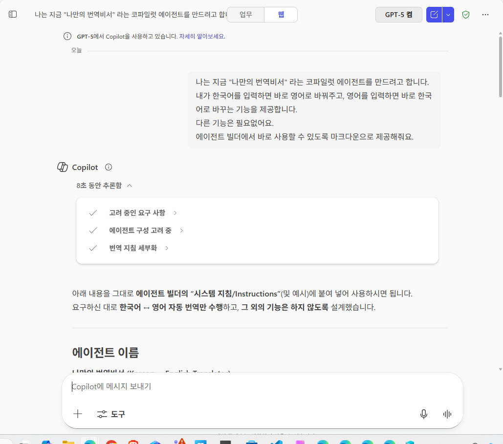
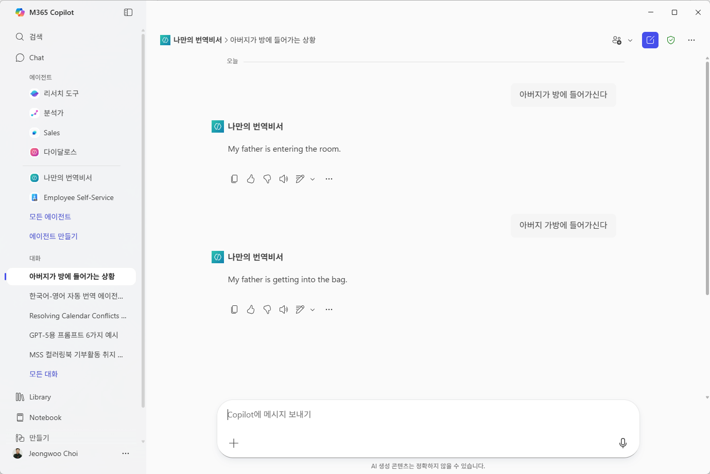

Stage7. 나만의 번역 도우미 에이전트 만들기
이번 단계에서는 나만의 번역 도우미 에이전트를 만들어 보겠습니다. 코파일럿 스튜디오 라이트 (에이전트 빌더)를 사용하면 정말 쉽고 빠르게 에이전트를 만들 수 있습니다.
에이전트를 만드는 데 가장 중요한 것이 무엇이라고 생각하시나요 ? 네, 맞습니다. 바로 지침과 데이터 입니다.
오늘은 데이터 없이 순수하게 지침만으로 동작하는 멋진 에이전트를 만들겁니다. 지침이요? 코파일과 함께 만들면 되지요.
1️⃣ 첫번째 단계, 코파일럿과 함께 지침 만들기
- 코파일럿을 엽니다. 이 때 Web Chat에서 GPT-5를 활성화 하시는 것을 추천합니다.
- 내가 만들고 싶은 에이전트를 구체적으로 설명합니다.
- 코파일럿이 제안하는 지침이 마음에 들지 않을 수 있습니다. 이 경우, 지침을 수정하거나 추가하여 나만의 스타일로 만들어 보세요.

2️⃣ 두번째 단계, 에이전트 빌더에서 에이전트 만들기
- 코파일럿 스튜디오 라이트 (에이전트 빌더)를 엽니다.
- "새 에이전트 만들기"를 클릭합니다.
- 에이전트 이름을 입력하고, 앞서 코파일럿과 함께 만든 지침을 복사하여 붙여넣습니다.
- 필요한 경우 추가 설정을 조정합니다. (예: 응답 길이, 톤 등)
- "에이전트 생성" 버튼을 클릭하여 에이전트를 만듭니다. 구성 탭을 클릭하면 이름과 설명, 지침 등을 입력할 수 있습니다.

3️⃣ 세번째 단계, 에이전트 테스트 및 개선
- 에이전트 빌더 내에서 에이전트를 테스트합니다. 다양한 번역 요청을 시도해 보세요.
- 에이전트의 응답을 검토하고, 필요에 따라 지침을 수정하여 개선합니다.
- 에이전트가 원하는 수준의 성능을 발휘할 때까지 반복적으로 테스트하고 조정합니다.

4️⃣ 네번째 단계, 에이전트 아이디어 제출하기
축하합니다! 이제 나만의 번역 도우미 에이전트를 성공적으로 만들었습니다.
여기에서 멈출 수 없지요. 우리는 코파일럿과 함께라면 그 어떤 에이전트라도 뚝딱 만들어 낼 수 있거든요.
앗! 또 다른 에이전트의 아이디어가 떠오르시나요 ? 아래 링크를 클릭하여 여러분의 반짝반짝 빛나는 에이전트 아이디어롤 제출해 주세요. 투표를 통해 선정된 아이디어는 상품을 드립니다.
🗝️ 수고하셨습니다. 던전관리자가 다음 스테이지로 가는 암호를 정해진 시간에 공지할 것입니다.